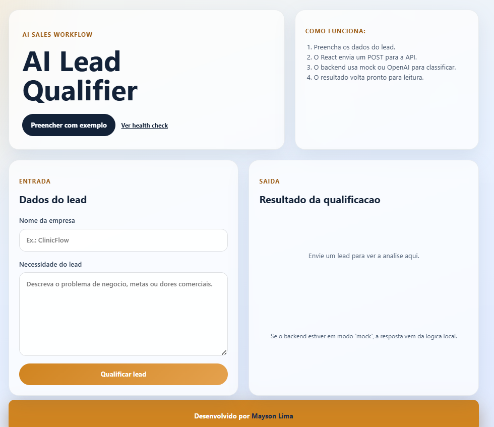

Fluxo completo
Captura os dados do lead, envia para a API e apresenta a resposta de forma clara no frontend.
O AI Lead Qualifier e um projeto de portfolio que simula um fluxo de qualificacao de leads com IA. O frontend em React envia os dados para uma API em Node.js e Express, que analisa a necessidade comercial do lead e devolve um resultado estruturado com status, score, motivo e abordagem sugerida.
Captura os dados do lead, envia para a API e apresenta a resposta de forma clara no frontend.
O backend funciona com provider mock para testes e tambem com OpenAI para simulacoes reais.
Mostra uma aplicacao de IA voltada para triagem, qualificacao e priorizacao comercial.

A proposta do projeto e demonstrar um caso de uso realista de IA aplicada a vendas. A aplicacao recebe o nome da empresa e a necessidade do lead, processa esse contexto no backend e retorna um parecer pronto para leitura, ajudando a visualizar como um time comercial pode automatizar a triagem inicial de oportunidades.
O usuario preenche o nome da empresa e descreve a necessidade comercial.
O frontend React envia os dados para a rota POST /qualify-lead.
A API processa a qualificacao com provider mock ou com a OpenAI API.
O sistema devolve status, score, reason e suggestedApproach de forma estruturada.
O projeto combina backend, frontend e integracao com IA para mostrar uma arquitetura modular e pronta para evolucao. Alem da interface React, a aplicacao possui validacao de entrada, variaveis de ambiente, provider configuravel e comunicacao local entre Vite e Express.
As imagens abaixo mostram a interface principal da aplicacao, um exemplo de retorno nao qualificado e um exemplo de lead qualificado com score, justificativa e sugestao de abordagem.